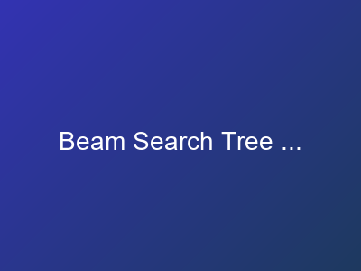
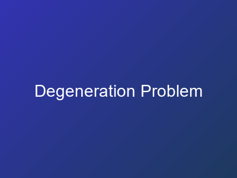
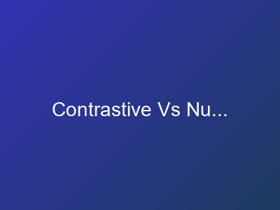

66 SLIDES
Decoding Strategies
From Greedy to Nucleus Sampling
Overview
Transform model probability distributions into coherent text. Different strategies trade off quality, diversity, and speed: greedy for determinism, sampling for creativity, beam search for quality.
Learning Objectives
- Implement greedy, beam search, and nucleus sampling strategies
- Understand temperature scaling and its effect on output diversity
- Diagnose and fix text degeneration (repetition, incoherence)
- Choose appropriate decoding strategies for different applications
Key Visualizations

Beam Search Tree Gra
 Temperature Effects
Temperature Effects

Degeneration Problem

Contrastive Vs Nucle
Key Topics
Greedy decoding
Beam search
Temperature scaling
Top-k and nucleus